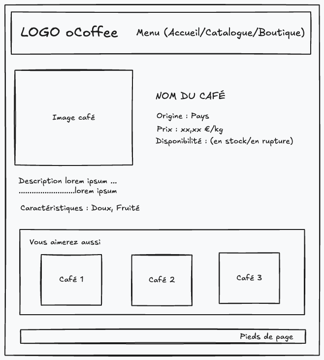

📅 SAISON B Semaine 4 Épisode 4 - Projet en autonomie Jour 2 - Structuration MVC et Dynamisation des Pages
📚 Introduction
Deuxième jour de travail sur le projet oCoffee ! Aujourd’hui, j’ai avancé sur la structuration de l’architecture MVC et la dynamisation des pages. Mon objectif était de rendre les pages du site fonctionnelles de manière statique, puis de commencer à les dynamiser avec des données JSON. Voici le bilan de la journée.
Note
Le dépôt Github du projet est disponible ici.
Étape 1 : Structuration de l’architecture MVC
Contexte
Les vues pour la page d’accueil et le catalogue étaient déjà fournies dans le dossier d’intégration du projet, avec leurs styles CSS respectifs. Mon travail a consisté à :
- Créer les vues manquantes (page de détails d’un café et page de présentation de la boutique).
- Configurer les routes et contrôleurs pour chaque page.
Structure du Projet :
📁ocoffee/
│
├── 📁node_modules/ # Folder generated by npm (do not version)
│
├── 📁data/ #Database folder
│ ├── create-db.sql
│ └── coffee-sample-data.json
│
├── 📁docs/ # Project specifications folder
│ ├── 📁integration/
│ ├── 📁project-brief/
│ └── 📁project-design/
│
├── 📁public/ # Static files (CSS, JS, images)
│ ├── 📁css/ # Style sheets
│ ├── 📁images/ # Images for the site (logos, cafes, etc.)
│ └── 📁js/ # Client-side JavaScript scripts
│
├── 📁src/ # Application source code
│ ├── 📁controllers/ # Controllers (business logic)
│ │ ├── home.controller.js
│ │ ├── catalog.controller.js
│ │ └── coffee-datails.controller.js
│ │
│ ├── 📁models/ # Models (interactions with the database)
│ │ ├── coffee.dataMapper.js
│ │ └── databaseClient.js # Connection to database
│ │
│ ├── 📁routers/ # Express routes handlers
│ │ ├── home.router.js
│ │ ├── catalog.router.js
│ │ ├── coffee-details.router.js
│ │ └── index.router.js
│ │
│ └── 📁views/ # EJS views (templates)
│ ├── 📁partials/ # Reusable partials (header, footer)
│ │ ├── header.ejs
│ │ └── footer.ejs
│ ├── home.ejs # Home page
│ ├── catalog.ejs # Coffee catalogue page
│ └── coffee-details.ejs # Coffee details page
│
├── index.js # Express app entry point
├── package.json # Dependencies and npm scripts
├── package-lock.json
├── .env # Environnement variables
├── .env.example # Public environnement variables
└── README.md # Project documentation
Actions réalisées
- Création des wireframes pour les pages manquantes :
- Page de détail d’un café : Affichage des informations spécifiques (nom, origine, prix, caractéristiques, etc.). 
- Développement des vues EJS de manière statique :
- Récupération de la page d'intégration home.html et conversion en
home.ejs. - Récupération de la page d'intégration catalog.html et conversion en
catalog.ejs. - Création de
coffee-details.ejspour la page de détail d’un café. - Création
shop.ejspour la page de présentation de la boutique.
- Récupération de la page d'intégration home.html et conversion en
-
Création des routes et contrôleurs :
home.router.jsethome.controller.jspour gérer la page d'accueil.catalog.router.jsetcatalog.controller.jspour gérer les requêtes liées aux cafés.shop.router.jsetshop.controller.jspour la page de présentation de la boutique.index.routerpour regrouper tous les routeurs.
Exemple sur la Home Page :
<%- include('partials/header.ejs') %> <section id="about"> <div> <h1>Votre spécialiste Haucloquois du café</h1> <p>oCoffee est un détaillant de café et de produits associés à la consommation du café basé dans la ville de Hauts-de-Cloques. Nous importons nos produits directement des producteurs, et nous les sélectionnons selon des critères exigeants de qualité. oCoffee est reconnu à l’échelle départementale.</p> <a class="button" href="#">Découvrir notre catalogue</a> </div> <img src="./images/about.jpg" alt="Selection de nos meilleurs cafés oCoffee"> </section> <section id="latest-products"> <h2>Nouveautés</h2> <ul> <li> <article> <img src="./images/coffees/100955890.png" alt="Ethiopian Yirgacheffe"> <div> <h3>Ethiopian Yirgacheffe</h3> <a class="button-outline" href="#">Voir le détail</a> </div> </article> </li> <li> <article> <img src="./images/coffees/100955890.png" alt="Ethiopian Yirgacheffe"> <div> <h3>Ethiopian Yirgacheffe</h3> <a class="button-outline" href="#">Voir le détail</a> </div> </article> </li> <li> <article> <img src="./images/coffees/100955890.png" alt="Ethiopian Yirgacheffe"> <div> <h3>Ethiopian Yirgacheffe</h3> <a class="button-outline" href="#">Voir le détail</a> </div> </article> </li> </ul> </section> <%- include('partials/footer.ejs') %>/** * Controller for handling home page logic. * @module controllers/homeController */ export default { /** * Renders the home page. * @function * @param {import('express').Request} req - Express request object * @param {import('express').Response} res - Express response object */ displayHome: (req, res) => { res.render('home'); }, }import { Router } from "express"; import homeController from "../controllers/home.controller.js"; /** * Router for handling home page related routes. * @module routers/homeRouter */ const homeRouter = Router(); /** * GET / * Route for rendering the home page. * Calls the displayHome method from homeController. */ homeRouter.get('/', homeController.displayHome); export default homeRouter;Router principal
src/routers/index.router.jsimport { Router } from 'express'; import homeRouter from './home.router.js'; /** * Main router that combines all sub-routers for the application. * @module routers/indexRouter */ const router = Router(); /** * Use the home router for home page related routes. */ router.use(homeRouter); export default router; -
Mise à jour du fichier
index.js:index.js/** * Main entry point for the Ocoffee application. * Sets up the Express server, view engine, static files, and routing. */ import express from "express"; import 'dotenv/config'; import router from "./src/routers/index.router.js"; // Get the port from environment variables const PORT = process.env.PORT; const app = express(); /** * Set EJS as the view engine. * Views are located in the './src/views' directory. */ app.set('view engine', 'ejs'); app.set('views', './src/views'); /** * Serve static files from the 'public' directory. */ app.use(express.static('./public')); /** * Use the main router for handling all routes. */ app.use(router); /** * Start the server and listen on the specified port. * Logs a message when the server is running. */ app.listen(PORT, () => { console.log(`Server is running on http://localhost:${PORT}`); });
Étape 2 : Dynamisation des pages avec des données JSON
Objectif
Avant de me connecter à une base de données PostgreSQL, j’ai décidé de simuler une base de données avec un fichier JSON contenant un échantillon de données sur les cafés. Cela me permet de tester le rendu dynamique des pages sans dépendre d’une base de données.
Actions réalisées
-
Création du fichier
data/coffee-sample-data.json: -
Intégration des données JSON dans les contrôleurs :
Exemple sur la Home Page :
src/controller/home.controller.jsimport coffees from '../../data/coffee-sample-data.json' with { type: 'json' }; /** * Controller for handling home page logic. * @module controllers/homeController */ export default { /** * Renders the home page with the three latest coffees. * Sorts the coffee data by reference in descending order and selects the top three. * * @function * @param {import('express').Request} req - Express request object * @param {import('express').Response} res - Express response object * @returns {void} */ displayHome: (req, res) => { // Sort the coffees array by reference in descending order const sortedCoffees = coffees.toSorted((a, b) => b.reference - a.reference); // Select the three latest coffees const threeLatestCoffees = sortedCoffees.slice(0, 3); // Render the 'home' view, passing the three latest coffees to the template res.render('home', { coffees: threeLatestCoffees }); }, }; -
Affichage dynamique dans les vues EJS :
src/views/home.ejs<%- include('partials/header.ejs') %> <section id="about"> <div> <h1>Votre spécialiste Haucloquois du café</h1> <p>oCoffee est un détaillant de café et de produits associés à la consommation du café basé dans la ville de Hauts-de-Cloques. Nous importons nos produits directement des producteurs, et nous les sélectionnons selon des critères exigeants de qualité. oCoffee est reconnu à l’échelle départementale.</p> <a class="button" href="/Catalogue">Découvrir notre catalogue</a> </div> <img src="./images/about.jpg" alt="Selection de nos meilleurs cafés oCoffee"> </section> <section id="latest-products"> <h2>Nouveautés</h2> <ul> <!-- Replace hard coding by a for...of loop with data from home.controller context --> <% for( const coffee of coffees ) { %> <li> <article> <img src="./images/coffees/<%= coffee.image %>" alt="<%= `image de café ${coffee.name}` %>"> <div> <h3><%= coffee.name %></h3> <a class="button-outline" href="/Catalogue/Cafe/<%= coffee.reference %>">Voir le détail</a> </div> </article> </li> <% } %> </ul> </section> <%- include('partials/footer.ejs') %>
Voir le code complet sur mon dépôt Github.
Étape 3 : Résolution d’un bug d’affichage
Problème rencontré
En testant la page de détail d’un café, j’ai rencontré une erreur dans la console :
Refused to apply style from '<URL>' because its MIME type ('text/html') is not a supported stylesheet MIME type, and strict MIME checking is enabled.
Diagnostic
Cette erreur indiquait que le navigateur refusait d’appliquer le fichier CSS car il ne le reconnaissait pas comme une feuille de style. Après investigation, j’ai réalisé que le problème venait des chemins des fichiers statiques dans ma vue EJS.
Solution
Dans le fichier d’intégration HTML fourni, les chemins vers les fichiers CSS étaient sous la forme ../css/style.css. Or, avec EJS et Express, les fichiers statiques doivent être référencés depuis le dossier public/ avec un chemin absolu :
Une fois cette petite correction effectuée, le style s’est appliqué correctement.
J'ai modifié toutes les vues ejs en faisant attention aux chemins des fichiers statiques.
Bilan de la journée
Ce qui a bien fonctionné
✅ Structuration MVC : Les routes, contrôleurs et vues sont maintenant bien organisés.
✅ Dynamisation des pages : Les données JSON sont correctement intégrées et affichées.
✅ Résolution du bug : J’ai compris l’importance des chemins des fichiers statiques dans un projet Express.
Difficultés rencontrées
⚠️ Chemins des fichiers statiques : Une erreur simple mais qui m’a fait perdre du temps.
Objectifs pour demain
🔹 Création de la base de données PostgreSQL :
- Implémenter le MPD créé hier.
- Connecter l’application Express à la base de données.
🔹 Remplacer les données JSON par des requêtes SQL :
- Utiliser
pgpour interagir avec PostgreSQL. - Mettre à jour les contrôleurs pour récupérer les données depuis la base de données.
Conclusion
Cette deuxième journée a été intense mais très formatrice. J’ai pu appliquer les concepts MVC, dynamiser mes pages et résoudre des problèmes techniques. Demain, je passe à l’étape cruciale de la création et connection à la base de données !